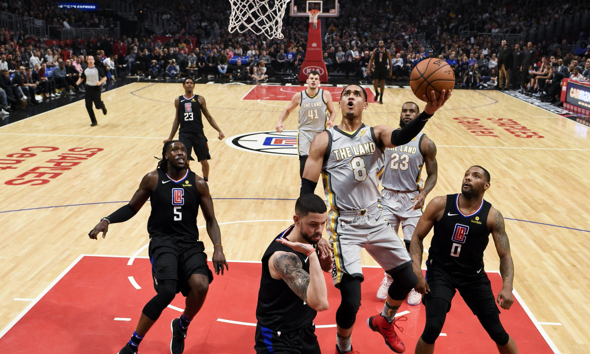
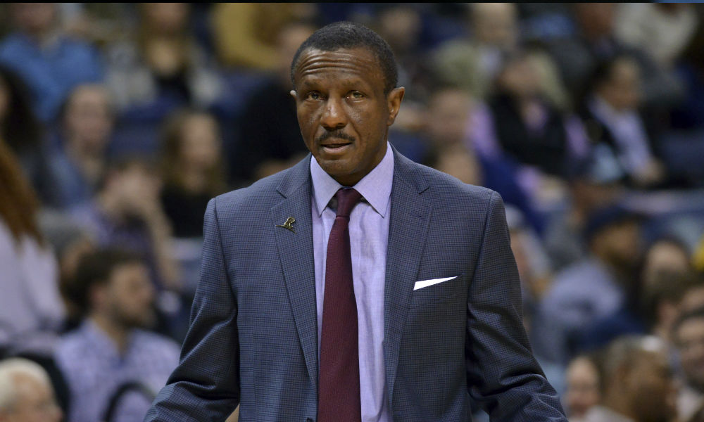
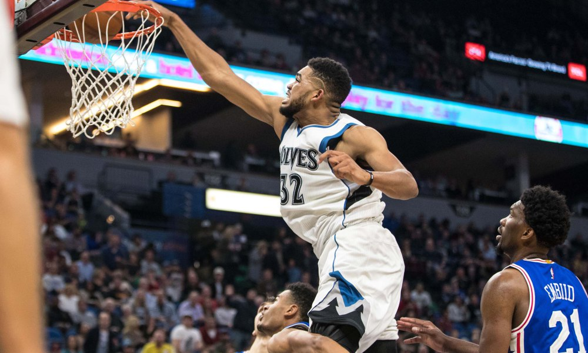

Game 1: Philadelphia 76ers at Orlando Magic
My Pick:
Philadelphia 76ers
Why I'm Rolling with them:
This will be Butler's first game as a 76er, and it's against a Magic team with a lot of larger younger players for Embiid to rack up fouls against. Having Butler isn't as big a deal for tonight, as they won't need his defensive talents as much. However, his offensive abilities will be appreciated in the 4th quarter, where the Sixers rank near the bottom of the league in scoring. I'm interested in seeing how the Philadelphia spacing is now that they've switched out Covington and Saric for Butler. However it looks, I still have the Sixers winning this one 121-114.
Game 2: Cleveland Cavaliers at Washington Wizards
My Pick:
Washington Wizards
Why I'm Rolling with them:
The Cavaliers suprised me yesterday against Charlotte, but that win happened for two reasons, neither I think is very likely to continue. One: The Hornets, a 36% 3 point shooting team, went 8-41 from three. If that's their season average, they hit 14 of those threes, and they score an additional 18 points. In addition, Clarkson scored 24 points on efficient shooting. I don't see that happening again. The Wizards are just a better team at maybe every position, and should take advantage against this Cleveland team as they win 117-104.
 Jordan Clarkson produced off the bench for the Cavs last nightGame 3: Miami Heat at Brooklyn Nets
My Pick:
Miami Heat
Why I'm Rolling with them:
This game would have been a lot more interesting if Levert didn't have a heartbreaking injury against the Timberwolves. This Nets team will need someone else to step up, and I could see Russell being that guy for them. However, that won't be enough against this tough, well rounded Miami Heat team. Dragic is back and had a good game against the 76ers. This Nets team doesn't quite have a strong enough backcourt to deal with Richardson and Dragic, so the Heat take it 110-103.
Game 4: Chicago Bulls at Boston Celtics
My Pick:
Boston Celtics
Why I'm Rolling with them:
The Celtics have won just 1 of their last 5, and that was a 7 point victory over the Suns. This team has looked shaky as of late, and this Bulls team might surprise them. However, the Celtics are first and foremost a good defensive team. The odds of the Bulls putting up a lot of points on this Celtics team is unlikely, plus Kyrie should be able to do some work against the Bulls defense. Not having Markkanen hurts the Bulls ability to space the floor considerably, and the Celtics should be able to take advantage of that. Celtics 115-108.
Game 5: Detroit Pistons at Toronto Raptors
My Pick:
Toronto Raptors
Why I'm Rolling with them:
This should be an interesting game. Toronto has historically performed fairly well against Detroit, but a large part of the reason for that was the presence of DeRozan. Leonard will still be a big upgrade there, and the Raptors should still have an easy time, but it will be interesting to see the coaching battle unfold between Nick Nurse and Dwane Casey as these one-time teammates have no lost love between them. Toronto takes it, 119-110.
 Casey should get a standing ovation during his return to TorontoGame 6: Memphis Grizzlies at Milwaukee Bucks
My Pick:
Milwaukee Bucks
Why I'm Rolling with them:
The Grizzlies have been steadily trekking along with a top 5 defense in the league. That's a good sign for this Grizzlies team that last year was struggling to win 20 games. However, Milwaukee has the number two offense AND defense. They've been dominant on both sides of the court, and the Grizzlies don't really have anyone to guard Giannis. Memphis losing Dillon Brooks will hurt them tonight as they also will have a harder time defending against Middleton, although Anderson should be fairly capable. Bucks, 120-109.
Game 7: New Orleans Pelicans at Minnesota Timberwolves
My Pick:
New Orleans Pelicans
Why I'm Rolling with them:
The Pelicans will have the pleasure of being the first team to face the new look Timberwolves, who should still be a pretty good team. My main concern regarding the Pelicans is how the AD/KAT matchup is going to go, but I have way more faith in Davis than I do in Towns, especially on the defensive end. Having Jrue to limit Derrick Rose will also help this team do better against Minnesota, who is struggling for creators now. Saric is also not great defensively and I am worried about this Minnesota defense, as the Pelicans will abuse it to win 122-114.
 Karl Anthony Towns is now once again the leader of this Timberwolves teamGame 8: New York Knicks at Oklahoma City Thunder
My Pick:
Oklahoma City Thunder
Why I'm Rolling with them:
The Thunder have been playing remarkably well since the loss of Westbrook, and Paul George is the main reason for that. The Thunder's suffocating defense has allowed them to dictate the speed of the game, and they have a knack for forcing their opponents into acts of panic, turning over the ball and allowing an easy bucket. Ferguson has looked very good on the defensive end so far this year, and that bodes well for tonight against a Knicks team that relies on Hardaway Jr. for a significant portion of their points. Thunder win this one 107-99.
Game 9: Utah Jazz at Dallas Mavericks
My Pick:
Utah Jazz
Why I'm Rolling with them:
This is an interesting game, as these two teams have a lot of similar characteristics. I think that at the end of the day, Utah is just better at executing than the Mavericks are, and that will allow them to pull ahead in this one. Doncic down the stretch of games has been really good, but there still seems to be some discontent between this Dallas squad. Because of this, I think that Ingles will be able to limit his effectiveness and put up some nice stats as the Jazz win 117-112.
Game 10: San Antonio Spurs at Phoenix Suns
My Pick:
San Antonio Spurs
Why I'm Rolling with them:
The battle of Texas sees a struggle between two of the best offensive shooting guards in the league in DeRozan and Booker. However, that's where the similarities end. The grinding nature of this Spurs team means that Phoenix will be slowed down to their pace, and the odds of Phoenix being able to stop the half-court offense of this Spurs team is unlikely. For reference, San Antonio is in the top half of the league offensively and defensively. The Suns are last offensively, and 28th defensively. San Antonio should take this pretty easily, 110-99.
Game 11: Portland Trail Blazers at Los Angeles Lakers
My Pick:
Portland Trail Blazers
Why I'm Rolling with them:
The Lakers have looked a lot better after gaining the veteran presence of Tyson Chandler, but this Portland team has looked good throughout the year. I'm definitely a victim of recency bias on a day to day level, but I have faith that Lillard will be able to dish out 25 points tonight as the Blazers give the Lakers all they can handle. LA barely managed to beat the Hawks, and were saved by Kyle Kuzma securing a very important offensive rebound. Portland is better than Atlanta by a significant margin. Portland, 121-114.